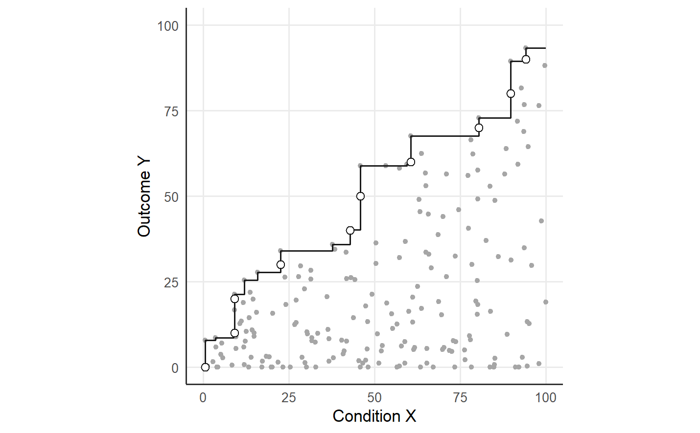

3 The CE-FDH ceiling as the strict member
The CE-FDH ceiling of NCA marks, for each outcome target, the lowest condition value among the cases that reach the target (Dul 2016). For observed cases (X_i, Y_i), i = 1, ..., n, with condition X and outcome Y, and for a target y reached by an observed case, the running minimum is r(y) = min{X_i : Y_i >= y} (Deja 2026b). The running minimum is non-decreasing in the target, because raising the target can only remove cases from the conditioning set {i : Y_i >= y}. At a scalar target t_y, the bottleneck r(t_y) is the lowest condition level observed among the cases with Y >= t_y, and a condition value above the bottleneck satisfies the necessary condition at the target while attainment stays open to the other constraints on the outcome.
Free disposal hull (FDH) methods originated in nonparametric production frontier analysis, where Deprins et al. (1984) estimated production possibilities without imposing convexity. The ceiling envelopment-free disposal hull (CE-FDH) of NCA adapts the step geometry of FDH to the upper-left empty zone of a necessity claim (Dul 2016). The link between the two methods is geometric: a production frontier measures efficiency against a feasible technology, whereas the CE-FDH ceiling marks a requirement that is necessary for the outcome and leaves sufficiency open (Deja 2026b).
NCA offers two further ceilings. Ceiling regression FDH (CR-FDH) fits a line to the CE-FDH ceiling points, and the quantile regression ceiling estimates a high conditional quantile of Y given X (Dul 2016; Goertz et al. 2013). QNCA estimates a low quantile of X among the cases with Y >= y. The QNCA conditioning keeps the result on the scale of the required condition and makes the running minimum r(y) the strict member of the tolerance-indexed frontiers, the member at the tolerance pi = 1 (Deja 2026b).
3.1 The running minimum on a grid
The running minimum at the targets 0, 10, …, 90 follows from the definition, and qnca_frontier() at pi = 1 returns the frontier at the same targets.
library(qnca)
d <- read.csv("https://raw.githubusercontent.com/MarekDejaUJ/qnca/main/data/qnca_dataset_n200.csv")
targets <- seq(0, 90, by = 10)
k <- sapply(targets, function(y) sum(d$Y >= y))
r <- sapply(targets, function(y) min(d$X[d$Y >= y]))
phi1 <- qnca_frontier(d$X, d$Y, pi = 1, y_grid = targets)
round(data.frame(target = targets, k = k, running_min = r, qnca_pi1 = phi1), 3)
#> target k running_min qnca_pi1
#> 1 0 200 0.543 0.543
#> 2 10 111 9.044 9.044
#> 3 20 75 9.044 9.044
#> 4 30 54 22.559 22.559
#> 5 40 37 42.790 42.790
#> 6 50 27 45.855 45.855
#> 7 60 15 60.593 60.593
#> 8 70 8 80.439 80.439
#> 9 80 4 89.703 89.703
#> 10 90 1 94.059 94.059
identical(r, phi1)
#> [1] TRUEThe column k counts the successful cases at each target. The function identical() returns TRUE, so the QNCA frontier at pi = 1 equals the running minimum at every target of the grid. At pi = 1 the frontier selects the order statistic of rank 1 among the successful condition values, which is the minimum. The requirement rises from 0.543 at the target 0, where all 200 cases succeed, to 94.059 at the target 90, where one case succeeds.
3.2 The step ceiling
The CE-FDH ceiling is a step function. The running minimum changes only at observed outcome values, because the conditioning set stays the same between two consecutive observed outcomes and gains the cases of each observed outcome as the target falls. The cumulative minimum of the condition, taken over the cases sorted by decreasing outcome, gives the value of the ceiling on each band between consecutive outcomes.
ord <- order(d$Y, decreasing = TRUE)
y_desc <- d$Y[ord]
r_run <- cummin(d$X[ord])
step <- data.frame(x = c(100, rep(r_run, each = 2)),
y = c(y_desc[1], as.vector(rbind(y_desc, c(y_desc[-1], 0)))))
ggplot() +
geom_point(data = d, aes(X, Y), size = 1.2, colour = "grey65") +
geom_path(data = step, aes(x, y), colour = "grey10", linewidth = 0.6) +
geom_point(data = data.frame(x = phi1, y = targets), aes(x, y),
shape = 21, fill = "white", colour = "grey10", size = 2.2) +
coord_equal(xlim = c(0, 100), ylim = c(0, 100)) +
labs(x = "Condition X", y = "Outcome Y")
Figure 3.1: The CE-FDH step ceiling of the 200 cases under the fixed scope [0, 100]^2 (solid line) and the QNCA frontier at pi = 1 at the targets 0, 10, …, 90 (open circles). The empty zone is the part of the scope to the left of the ceiling; the band above the largest observed outcome counts as empty up to the scope bound x_max = 100.
3.3 The strict-limit reduction
The strict-limit reduction links QNCA to NCA (Deja 2026b). The scope is the rectangle [x_min, x_max] x [y_min, y_max], and [a]_+ = max(a, 0) denotes the positive part. The CE-FDH effect size is the area of the empty zone divided by the area of the scope,
d_CE-FDH = integral from y_min to y_max of [r(y) - x_min]_+ dy / ((x_max - x_min) (y_max - y_min)),
and for the continuous running minimum and the fixed-scope extension, the QNCA effect size d_pi at pi = 1 equals d_CE-FDH (Dul 2016; Deja 2026b).
The argument for the reduction has three steps (Deja 2026b). At pi = 1 the quantile probability 1 - pi is zero, and the type-1 quantile at probability zero is the minimum, so the QNCA frontier equals r(y) at every target with a successful case. The running minimum is non-decreasing, so the monotone envelope of QNCA leaves the frontier unchanged. The empty zone holds the scope points (x, y) with x < r(y), where r(y) = x_max in an unobserved fixed-scope top band, and the area of the empty zone is the integral in the numerator of d_CE-FDH.
The reduction is exact for the continuous step frontier. The function nca_ce_fdh_d() integrates the step function exactly, whereas qnca() integrates the frontier by the trapezoid rule over a grid of n_grid outcome targets. The QNCA value at pi = 1 therefore carries a discretisation difference that falls as the grid is refined (Deja 2026b).
fixed <- c(0, 100, 0, 100)
exact <- nca_ce_fdh_d(d$X, d$Y, scope = fixed)
grid_d <- sapply(c(50, 400), function(m) {
qnca(d$X, d$Y, pi = 1, n_grid = m, B = 0, scope = fixed)$d_pi
})
data.frame(method = c("exact CE-FDH", "QNCA, n_grid = 50", "QNCA, n_grid = 400"),
d = round(c(exact, grid_d), 6),
difference = signif(c(0, grid_d - exact), 3))
#> method d difference
#> 1 exact CE-FDH 0.492739 0.000000
#> 2 QNCA, n_grid = 50 0.494148 0.001410
#> 3 QNCA, n_grid = 400 0.492750 0.000011Under the fixed scope the exact CE-FDH effect size of the 200 cases is 0.492739. The QNCA effect size at pi = 1 is 0.494148 with 50 grid targets and 0.492750 with 400 grid targets, so the difference to the exact value falls from 0.001410 to 0.000011 as the grid is refined.
3.4 The stored strict-limit validation
The repository stores the strict-limit validation for the four synthetic datasets of the repository under the fixed scope [0, 100]^2 (Deja 2026b). The file validation_invariant.csv compares the QNCA effect size at pi = 1 on a 400-point grid with the native CE-FDH effect size. The file dul_nca_results.csv adds the CE-FDH and CR-FDH effect sizes of the NCA package (Dul 2026).
base <- "https://raw.githubusercontent.com/MarekDejaUJ/qnca/main/data/"
read.csv(paste0(base, "validation_invariant.csv"))
#> dataset n qnca_d_pi1 native_ce_fdh_d abs_diff
#> 1 n100 100 0.495553 0.495353 2.00e-04
#> 2 n200 200 0.492750 0.492739 1.10e-05
#> 3 n500 500 0.450484 0.450813 3.29e-04
#> 4 n1000 1000 0.451198 0.451110 8.78e-05
dul <- read.csv(paste0(base, "dul_nca_results.csv"))
ce <- dul[dul$method == "ce_fdh", ]
ce[, c("dataset", "qnca_d_pi1", "native_ce_fdh_d", "dul_d")]
#> dataset qnca_d_pi1 native_ce_fdh_d dul_d
#> 1 n100 0.4955534 0.4953535 0.4953535
#> 3 n200 0.4927501 0.4927391 0.4927391
#> 5 n500 0.4504838 0.4508132 0.4508132
#> 7 n1000 0.4511980 0.4511102 0.4511102
signif(c(native_vs_nca = max(ce$abs_diff_native_vs_dul),
qnca_vs_nca = max(ce$abs_diff_qnca_vs_dul)), 4)
#> native_vs_nca qnca_vs_nca
#> 1.166e-15 3.294e-04
dul[dul$method == "cr_fdh", c("dataset", "dul_d")]
#> dataset dul_d
#> 2 n100 0.4686445
#> 4 n200 0.4673743
#> 6 n500 0.4345283
#> 8 n1000 0.4412000For the 200 cases, the stored QNCA value 0.492750 and the stored native value 0.492739 equal the values of the grid computation. The native CE-FDH effect size matches the CE-FDH effect size of the NCA package to floating point, with a largest absolute difference of 1.166e-15 across the four datasets. The grid-based QNCA value differs from the NCA value by at most 3.294e-04, the expected discretisation difference between a trapezoid rule and exact step-area integration (Deja 2026b). The CR-FDH effect size of the NCA package for the 200 cases is 0.4673743. CR-FDH is a regression line fitted to the CE-FDH ceiling points, and the strict-limit reduction targets CE-FDH only (Deja 2026b).
3.5 The CE-FDH effect size of the NCA package
The NCA package computes the CE-FDH effect size of the same data on the same scope (Dul 2026). The chunk runs when the NCA package is installed.
if (requireNamespace("NCA", quietly = TRUE)) {
model <- NCA::nca_analysis(d, "X", "Y", ceilings = "ce_fdh", scope = fixed, test.rep = 0)
NCA::nca_extract(model, x = "X", ceiling = "ce_fdh", param = "Effect size")
}
#> [1] 0.4927391The CE-FDH effect size of the NCA package for the 200 cases, 0.4927391 in the stored file dul_nca_results.csv, equals the native value of nca_ce_fdh_d().
3.6 Single-case sensitivity
The CE-FDH ceiling is set by the most efficient observed cases. The ceiling is by definition the strictest boundary that every observed case respects, so one case is enough to move the ceiling, and one valid but unusual case at the boundary can lower several bottlenecks and shrink the empty-zone effect size (Deja 2026b). The sensitivity follows from the definition of CE-FDH and belongs to the strict member of the QNCA frontiers. One added case with the low condition value 10 and the high outcome 80 shows the size of the effect on the 200 cases.
d_plus <- rbind(d, data.frame(X = 10, Y = 80))
bottleneck_targets <- c(20, 50, 80)
tab <- rbind(
"200 cases" = c(nca_ce_fdh_d(d$X, d$Y, scope = fixed),
qnca_frontier(d$X, d$Y, pi = 1, y_grid = bottleneck_targets)),
"with the added case" = c(nca_ce_fdh_d(d_plus$X, d_plus$Y, scope = fixed),
qnca_frontier(d_plus$X, d_plus$Y, pi = 1,
y_grid = bottleneck_targets))
)
colnames(tab) <- c("ce_fdh_d", "target_20", "target_50", "target_80")
round(tab, 4)
#> ce_fdh_d target_20 target_50 target_80
#> 200 cases 0.4927 9.0441 45.8548 89.7033
#> with the added case 0.2588 9.0441 10.0000 10.0000The added case lowers the requirement at the target 50 from 45.8548 to 10 and the requirement at the target 80 from 89.7033 to 10, because the added case reaches both targets with the condition value 10. The requirement at the target 20 stays at 9.0441, the condition value of an observed case that reaches the target 20 with less of the condition than the added case. The CE-FDH effect size falls from 0.4927 to 0.2588 after one added case among 201. Guidance on NCA asks analysts to inspect influential ceiling cases (Dul et al. 2023). QNCA keeps every case and reports, through the tolerances pi < 1, how much the estimated boundary depends on a few efficient cases (Deja 2026b).
3.7 The same call in Python and Julia
The Python package qnca and the Julia package QuantileNecessity return the same running minimum, the same exact and grid-based effect sizes, and the same effect size after the added case.
from urllib.request import urlopen
import numpy as np
from qnca import nca_ce_fdh_d, qnca, qnca_frontier
url = "https://raw.githubusercontent.com/MarekDejaUJ/qnca/main/data/qnca_dataset_n200.csv"
X, Y = np.loadtxt(urlopen(url), delimiter=",", skiprows=1, unpack=True)
targets = np.arange(0.0, 100.0, 10.0)
print(np.round(qnca_frontier(X, Y, pi=1.0, y_grid=targets), 3))
fixed = (0.0, 100.0, 0.0, 100.0)
print(round(nca_ce_fdh_d(X, Y, scope=fixed), 6))
print([round(qnca(X, Y, pi=1.0, n_grid=m, B=None, scope=fixed).d_pi, 6) for m in (50, 400)])
print(round(nca_ce_fdh_d(np.append(X, 10.0), np.append(Y, 80.0), scope=fixed), 4))
#> [ 0.543 9.044 9.044 22.559 42.79 45.855 60.593 80.439 89.703 94.059]
#> 0.492739
#> [0.494148, 0.49275]
#> 0.2588using QuantileNecessity, Downloads, DelimitedFiles
url = "https://raw.githubusercontent.com/MarekDejaUJ/qnca/main/data/qnca_dataset_n200.csv"
data = readdlm(Downloads.download(url), ',', Float64; skipstart = 1)
X, Y = data[:, 1], data[:, 2]
targets = collect(0.0:10.0:90.0)
println(round.(qnca_frontier(X, Y, 1.0, targets); digits = 3))
fixed = (0.0, 100.0, 0.0, 100.0)
println(round(nca_ce_fdh_d(X, Y; scope = fixed); digits = 6))
println([round(qnca(X, Y; pi = 1.0, n_grid = m, B = 0, scope = fixed).d_pi; digits = 6)
for m in (50, 400)])
println(round(nca_ce_fdh_d(vcat(X, 10.0), vcat(Y, 80.0); scope = fixed); digits = 4))
#> [0.543, 9.044, 9.044, 22.559, 42.79, 45.855, 60.593, 80.439, 89.703, 94.059]
#> 0.492739
#> [0.494148, 0.49275]
#> 0.2588